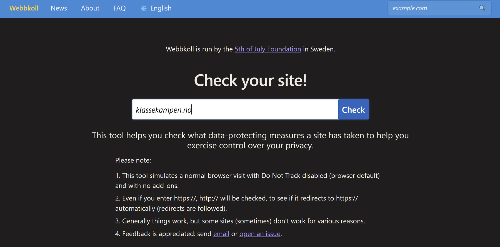
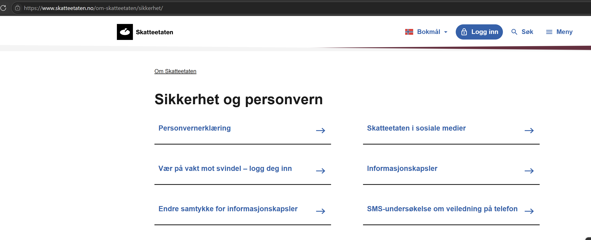

Figure 2
Third-Party Requests for 18 Sites (Table 2)

Note. Ranked on the Table 2 request column. Highest five start at fotball.no (113). Lowest five start at lanekassen.no (1).
Humna Akhtar, Mithun Chandra Debnath, Karina Sætersdal Nilssen, and Sumit Prasad Sah
Department of Computer Science, Oslo Metropolitan University
ACIT4280 Privacy by Design
Group Assignment 1A
3 September 2026
26 August 2026
A Norwegian front page can greet the reader in Bokmål and still call servers in several countries before anyone has clicked Ja or Nei. This report asks two questions about that contact. First: what does a technical scan show about third-party sharing, cross-border export and tracking on 18 Norwegian-facing sites in shopping, government, news and media, and sport? Second: for five of those sites, which lawful basis does the privacy notice claim, and does an independent tool support that claim?
The General Data Protection Regulation (GDPR) lays down the rules for personal data in the EEA (European Union, 2016). Personal data means information that relates to an identified or identifiable person. Processing means any operation on that data, including collection, storage and disclosure. Article 6 says processing is lawful only if at least one basis applies. The bases used in this paper are legal obligation (a duty in law), public task (an official function laid down in law), contract (what is necessary to deliver an agreement), consent (a free, specific and informed yes), and legitimate interests (a balanced interest that is not overridden by the person's rights). A cookie is a small file stored on a device. The ePrivacy rules govern that storage (European Parliament & Council of the European Union, 2002, 2009). A third-party request is a call from the page to a host other than the site you opened. The two are not the same.
Webbkoll is a public scanner (5th of July Foundation, n.d.-c). It reports HTTPS, cookies, third-party requests and the server IP. It does not read a privacy notice, click a banner, or decide Article 6. The English interface was used. Figure 1 shows the check page. Each result is one live Chromium visit with no add-ons, no Do Not Track and no consent click (5th of July Foundation, n.d.-a, n.d.-b). The scan timestamp is part of the measurement. Article 5(1)(a) requires processing to be transparent. Two measurement series are therefore retained rather than overwriting the first row (European Union, 2016).
Server location is the Country field in KeyCDN IP Location Finder (KeyCDN, n.d.). If Look up prints only a network name, the cell is recorded as none returned. A company name is not a country. Norway is dropped from the country list. Internal cookies are set by the site itself. External cookies are set by someone else. Third-party requests count hosts contacted on load. Request volume is not cookie volume: a site may contact many hosts without setting a third-party cookie. Table 2 is the first measurement. Table 3 is a repeat measurement. The two series are not averaged.
Figure 1
Webbkoll Start Page for klassekampen.no

Note. English interface. klassekampen.no is fifth-highest on third-party requests in Table 2 and is therefore used as the method example (5th of July Foundation, n.d.-c).
The 18 services were divided equally among the group members. Table 2 records the first measurement on 20 August 2026 and is not overwritten. Table 3 records a repeat measurement the same day, with host-by-host KeyCDN countries on 21 August 2026. A later visit can differ because Webbkoll stores a result for 24 hours. Variation between rows is therefore reported, not treated as an error in the first series.
Seventeen of 18 sites set zero third-party cookies. The exception is ikea.no (two cookies) after redirect to ikea.com. Third-party requests in Table 2 range from 1 (lanekassen.no) to 113 (fotball.no). Figure 2 ranks those counts. Figure 3 shows each site's share of the total. Figure 4 groups the same counts by sector. News and media contact the most hosts. Government sites contact the fewest. Sport is high because of fotball.no. Shopping lies between those extremes. babyshop.no rises to 101 requests on the repeat measurement. Webbkoll cannot prove that a request contains personal data. It can only show that a host in that country was contacted (European Union, 2016, Arts. 44-47).
Table 2
First Webbkoll Measurement of 18 Norwegian-Facing Services (20 August 2026)
| Name of service | Sector | Server | Int. | Ext. | Req. | n countries | List of countries |
|---|---|---|---|---|---|---|---|
| xxl.no | Shopping | US | 3 | 0 | 26 | 4 | PL, IE, CA, SE |
| cdon.no | Shopping | CA | 4 | 0 | 33 | 3 | CA, US, SE |
| ikea.no | Shopping | CA | 8 | 2 | 15 | 2 | CA, US |
| babyshop.no | Shopping | CA | 1 | 0 | 45 | 2 | SE, US |
| skatteetaten.no | Government | CA | 5 | 0 | 14 | 5 | IE, SE, FR, GB, NO, CA |
| barnevernet.no | Government | NO | 2 | 0 | 25 | 4 | SE, DE, CA, NO, GB |
| altinn.no | Government | CA | 0 | 0 | 5 | 1 | US |
| lanekassen.no | Government | NL | 0 | 0 | 1 | 1 | DE |
| aftenposten.no | News / media | SE | 5 | 0 | 48 | 5 | SE, CA, US, DE, IE |
| nrk.no | News / media | SE | 10 | 0 | 7 | 1 | SE |
| netflix.no | News / media | GB | 6 | 0 | 22 | 2 | GB, CA |
| document.no | News / media | DE | 4 | 0 | 51 | 6 | US, CA, SE, FR, DE, FI |
| klassekampen.no | News / media | US | 4 | 0 | 46 | 2 | SE, US |
| spotify.no | News / media | US | 3 | 0 | 10 | 2 | SE, US |
| worldofwarcraft.com | News / media | IE | 4 | 0 | 90 | 4 | FR, SE, CA, US |
| dnt.no | Sport | GB | 6 | 0 | 16 | 4 | SE, CA, NL, FI |
| fotball.no | Sport | NL | 8 | 0 | 113 | 5 | SE, DK, CA, US, NL |
| skiforeningen.no | Sport | SE | 1 | 0 | 14 | 3 | NL, US, SE |
Note. Int. = internal cookies; Ext. = external cookies; Req. = third-party requests; n countries = unique KeyCDN countries excluding Norway. Lists may still show NO when it appeared on the first worksheet; the count column excludes it. Service names follow the course list even when Webbkoll followed a redirect.
Table 3
Repeat Webbkoll Measurement (20 August 2026) and KeyCDN Third-Party Countries (21 August 2026)
| Name of service | Sector | Server | Int. | Ext. | Req. | n countries | List of countries |
|---|---|---|---|---|---|---|---|
| xxl.no | Shopping | US | 3 | 0 | 26 | 2 | IE, US |
| cdon.no | Shopping | US | 4 | 0 | 33 | 1 | US |
| ikea.no | Shopping | US | 8 | 2 | 15 | 1 | US |
| babyshop.no | Shopping | none returned | 1 | 0 | 101 | 2 | IE, US |
| skatteetaten.no | Government | US | 5 | 0 | 14 | 4 | FR, IE, SE, US |
| barnevernet.no | Government | NO | 2 | 0 | 25 | 4 | DE, IE, SE, US |
| altinn.no | Government | none returned | 0 | 0 | 5 | 1 | US |
| lanekassen.no | Government | NL | 0 | 0 | 1 | 1 | DE |
| aftenposten.no | News / media | US | 5 | 0 | 49 | 4 | DE, IE, SE, US |
| nrk.no | News / media | SE | 11 | 0 | 7 | 1 | SE |
| netflix.no | News / media | US | 6 | 0 | 22 | 1 | US |
| document.no | News / media | DE | 4 | 0 | 51 | 5 | FI, FR, IE, SE, US |
| klassekampen.no | News / media | US | 4 | 0 | 56 | 3 | IE, SE, US |
| spotify.no | News / media | US | 3 | 0 | 10 | 2 | SE, US |
| worldofwarcraft.com | News / media | IE | 4 | 0 | 92 | 3 | IE, SE, US |
| dnt.no | Sport | none returned | 6 | 0 | 16 | 5 | FI, IE, NL, SE, US |
| fotball.no | Sport | NL | 9 | 0 | 114 | 5 | DK, IE, NL, SE, US |
| skiforeningen.no | Sport | US | 1 | 0 | 14 | 3 | IE, NL, US |
Note. Table 2 is unchanged. Material differences: babyshop.no 101 versus 45; klassekampen.no 56 versus 46. none returned means no Country field (dnt.no, babyshop.no, altinn.no). Redirects were measured at the landing host. One Netflix host lookup (assets.nflxext.com) was incomplete.
Figure 2
Third-Party Requests for 18 Sites (Table 2)
Note. Ranked on the Table 2 request column. Highest five start at fotball.no (113). Lowest five start at lanekassen.no (1).
Figure 3
Share of Third-Party Requests (Table 2)

Note. fotball.no and worldofwarcraft.com together account for about one third of all recorded requests.
Figure 4
Third-Party Requests by Sector (Table 2)

Note. Sector totals follow Table 2. News and media carry the most requests; government carries the fewest.
The 18 sites are ranked on third-party requests in Table 2 (Figure 2). The rank is contact on load, not the external-cookie count. Table 4 lists the highest five and the lowest five. fotball.no contacts 113 hosts and still sets zero third-party cookies. A low cookie count can therefore coexist with a high request count. document.no has the widest first country list (six states, excluding Norway). lanekassen.no and altinn.no are the most restrained government fronts. The repeat measurement would place babyshop.no at 101 requests (Table 3). Rankings in this paper remain those of the first measurement.
Table 4
Highest Five and Lowest Five by Third-Party Request Volume (Table 2)
| Rank | Name of service | Sector | Req. | n countries |
|---|---|---|---|---|
| Highest 1 | fotball.no | Sport | 113 | 5 |
| Highest 2 | worldofwarcraft.com | News / media | 90 | 4 |
| Highest 3 | document.no | News / media | 51 | 6 |
| Highest 4 | aftenposten.no | News / media | 48 | 5 |
| Highest 5 | klassekampen.no | News / media | 46 | 2 |
| Lowest 5 | skiforeningen.no | Sport | 14 | 3 |
| Lowest 4 | spotify.no | News / media | 10 | 2 |
| Lowest 3 | nrk.no | News / media | 7 | 1 |
| Lowest 2 | altinn.no | Government | 5 | 1 |
| Lowest 1 | lanekassen.no | Government | 1 | 1 |
Note. Ranked on Table 2 requests. skatteetaten.no also has 14 requests; skiforeningen.no is listed because it has fewer countries (3 vs 5). document.no has the widest first country list (6). ikea.no remains the only third-party-cookie site (2 cookies).
Figures 1, 5 and 6 show one full pass so the table rules can be checked. klassekampen.no is also Highest 5 in Table 4. Scan time: 12:36:46 UTC, 20 August 2026. Four first-party cookies and zero third-party cookies still came with 56 requests to 13 hosts, including Google advertising, Meta and Cookiebot. Missing HSTS, CSP and related headers concern integrity and confidentiality (Arts. 5(1)(f), 25 and 32). They do not decide the lawful basis. Privacy by design is both: how the page behaves, and why the controller may process the data. KeyCDN of the server IP is United States, Google (Figure 6).
Figure 5
Webbkoll Summary for klassekampen.no

Note. Scan time 20 August 2026, 12:36:46 Etc/UTC. HTTPS by default: yes. CSP not implemented. Cookies: 4 first-party, 0 third-party. Third-party requests: 56 to 13 hosts (5th of July Foundation, n.d.-c).
Figure 6
KeyCDN Look Up of the klassekampen.no Server IP

Note. Look up of 2600:1901:0:25b9::. Country: United States (US). Provider: Google LLC. The same tool on each unique third-party IP fills the country list (KeyCDN, n.d.).
A service does not have one lawful basis for everything it does. The controller must name a purpose, then name a basis for that purpose (Information Commissioner's Office, n.d.-a). The ICO lawful basis tool was applied to five notices (Information Commissioner's Office, n.d.-b): skatteetaten.no, netflix.no, fotball.no, document.no and babyshop.no. Each run states one concrete activity. Official ICO reports are dated 26 August 2026. Table 5 is the summary.
Does a Ja/Nei banner decide whether the Tax Administration may process income data? No. Article 6 answers why personal data may be processed. Cookie rules answer whether information may be stored on a device. Mix the two in one ICO run, and the tool returns the wrong basis. For tax and the National Population Register, the notice says processing is required by law and is generally not optional (The Norwegian Tax Administration, n.d.). The ICO report marks legal obligation and public task APPROPRIATE. Consent is NOT APPROPRIATE and likely invalid: the controller cannot offer a genuine free and ongoing choice for a statutory duty. Optional statistics cookies (Skyra, Matomo, Google Analytics, Siteimprove) are a different purpose. They use a Ja/Nei banner. A dedicated ICO run marks consent INCONCLUSIVE: the banner offers a choice, but the request does not fully name controller, purpose and types. No basis is APPROPRIATE for that cookie purpose.
The other four runs keep one purpose. Netflix needs account and payment data to provide the paid service (Netflix, 2026). Contractual necessity means the processing is needed to perform the agreement, not merely useful. ICO marks contract APPROPRIATE and consent as likely invalid: there is no real, ongoing choice if the service cannot be delivered without the data. Norges Fotballforbund publishes name and club of active players aged 13+ as match history, with opt-out through the club (Norges Fotballforbund, n.d.). ICO marks legitimate interests APPROPRIATE. Membership in FIKS may rest on contract. Cookiebot may rest on ePrivacy consent. Those are other purposes. Babyshop's sales terms are a purchase contract (Babyshop Sthlm Holding AB, n.d.). ICO marks contract APPROPRIATE for checkout. The notice does not label Article 6(1)(b). Marketing and cookies stay separate.
document.no is the case that fails the consent test. Google Signals is described as advertising analytics. Article 6 is not named (Document Media AS, n.d.). Collection is said to run only with a Google login and ad personalization. That looks like consent. The ICO report marks no basis APPROPRIATE. Consent is INCONCLUSIVE because a valid request must be clear, prominent and separate from other terms. The choice sits in Google settings. Document Pluss terms also bundle acceptance of the privacy notice. Contract and legitimate interests are not appropriate for this advertising purpose. A notice may aim at consent and still fail the request.
Webbkoll does not click banners (5th of July Foundation, n.d.-b). skatteetaten.no/person/ was opened in a clean browser and Nei was selected on 24 August 2026. That tests whether optional tracking is blocked after rejection. It is not the lawful basis for tax administration. Figure 7 shows the Tax Administration hub that separates the privacy notice from cookie settings, which is the same split used in Table 5.
Figure 7
Security and Privacy Hub on skatteetaten.no

Note. Personvernerklæring and Informasjonskapsler are listed as separate destinations. The two ICO rows for skatteetaten.no follow that split (The Norwegian Tax Administration, n.d.).
Table 5
ICO Lawful Basis Summary for Five Selected Services
| Service | Processing purpose (one) | Basis claimed in notice | ICO result | Match? |
|---|---|---|---|---|
| skatteetaten.no | Tax and registry administration (identity, income, tax data) | Legal obligation / processing required by law; opt-out generally not possible | Legal obligation and public task APPROPRIATE; consent NOT APPROPRIATE (likely invalid) | Yes |
| skatteetaten.no | Optional web statistics cookies | Consent (Ja/Nei banner) | Consent INCONCLUSIVE; no basis APPROPRIATE | Partial (separate run) |
| netflix.no | Account and payment data to provide paid streaming | EEA/UK: contractual necessity to provide the service to members | Contract APPROPRIATE; other bases NOT APPROPRIATE | Yes |
| fotball.no | Publishing player name and club for match history (13+) | Public-interest match history with club opt-out (LI in practice) | Legitimate interests APPROPRIATE; other bases NOT APPROPRIATE | Yes for this purpose |
| document.no | Google Signals / advertising analytics from site activity | Article 6 not named; Google login plus ad personalization; opt-out links | Consent INCONCLUSIVE; no basis APPROPRIATE | Partial |
| babyshop.no | Customer, delivery and payment data to complete a purchase | Not labeled as Article 6(1)(b); purchase data processed to fulfil orders | Contract APPROPRIATE; other bases NOT APPROPRIATE | Yes for checkout |
Note. One processing purpose per ICO row. Official ICO reports dated 26 August 2026. Marketing, cookies and membership administration stay separate purposes where the notice uses other bases.
The scan and the law answer different questions. On third-party requests the highest five are fotball.no, worldofwarcraft.com, document.no, aftenposten.no and klassekampen.no. The lowest five are lanekassen.no, altinn.no, nrk.no, spotify.no and skiforeningen.no. ikea.no is the only third-party-cookie row. Four of five core purposes match the notice (Table 5). Two consent tests fail: optional cookies on skatteetaten.no (controller, purpose and types not fully named) and Google Signals on document.no (the request is not clear, prominent and separate). A legal duty to assess tax is not a cookie click. One purpose requires one basis.